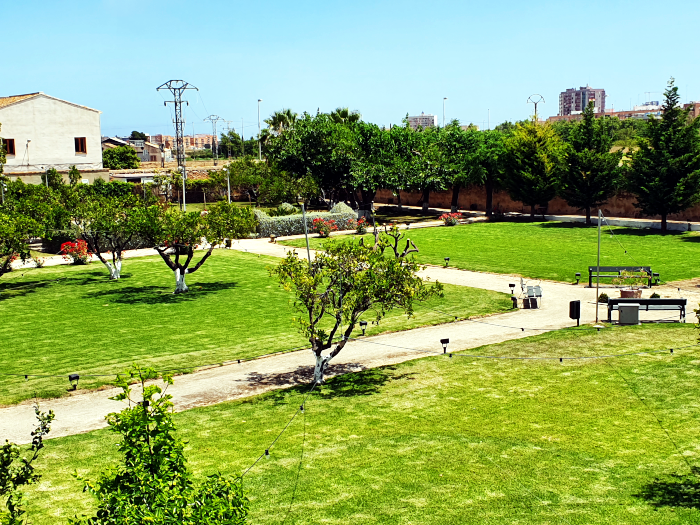
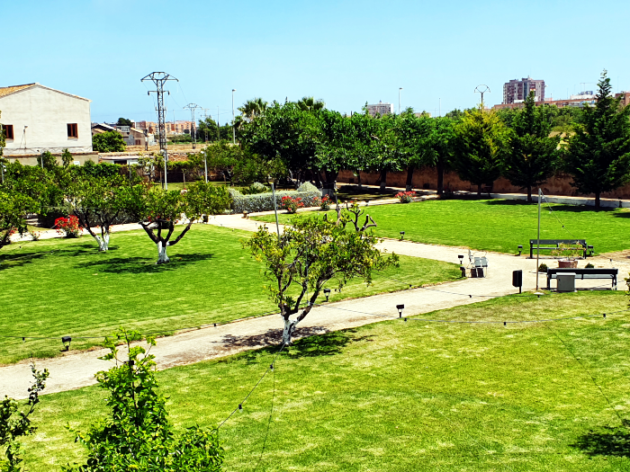

Calidad, seriedad y compromiso.
Decovert
Decovert es una empresa que cuenta con una considerable experiencia dentro del sector de la jardinerÌa. Desde su nacimiento, ha mostrado una esencia de mejora y un espÌritu de progresiÛn que nos ha llevado a entregar un gran servicio a nuestros clientes.
Somos una empresa multidisciplinar especializada en la creaciÛn y mantenimiento de espacios para el disfrute al aire libre. Decovert como empresa de jardinerÌa, se adapta a todo tipo de trabajos de jardinerÌa en la ciudad de Valencia, que represente un reto (plantaciones de tepes de cÈsped, rehabilitaciones de jardines, grandes mantenimientos y puesta apunto de un jardÌn, riego, talas y podas en altura, limpieza y perfilados de setos, nuevas plantaciones...) sin dejar a un lado las labores b·sicas de jardinerÌa y mantenimientos de jardines, con nuestro particular toque de calidad.
Decovert ofrece, gracias a su equipo multifacÈtico, una variedad de servicios en el ·mbito de la jardinerÌa. Nos dedicamos a perfeccionar su jardÌn a la carta, solo debe ponerse en contacto con nosotros y comentarnos cuales son tus ideas, el resto queda en nuestras manos. Porque para nosotros, nuestro hogar es su jardÌn.
Jardinería
 


Servicios
Un gran equipo.
Nuestra experiencia nos ha hecho adquirir conocimientos, por eso ofrecemos variados servicios que engloban el mundo de la jardinería. Brindamos nuestros servicios en toda la provincia de Valencia, donde incluimos particulares, empresas, comunidades de vecinos o urbanizaciones.
Riegos
Sistemas de riego
Decovert jardinería, realiza cualquier instalaci√≥n de riego automatizado, minimizando el consumo en su jard√≠n. Instalamos bombas inyectoras para la aplicaci√≥n v√≠a riego y aplicamos tratamientos fitosanitarios, adem√°s de instalaciones de sondas para el control de humedades.
Mantenimientos
Conservación y mantenimiento.
Decovert jardineria realizamos mantenimientos integrales de comunidades con on un personal cualificado y profesional. Realizamos servicios de limpieza de edificios, mantenimientos de jardines y piscinas.
Podas
Podas, talas y perfilados.
Nuestra empresa cuida y da forma controlada y profesional en función a cualquier especie; árboles, arbustos, etc...
Tratamientos fitosanitarios
Decovert, damos servicio y asesoramiento para cualquier problema que le pueda surgir en su entorno ajardinado, aplicando productos homologados y personalizados sin dañar el medio ambiente. Además de tratamientos con técnicas de endoterapia e inyección directa.
Paisajismo
Nuestro equipo realiza cualquier proyecto de paisajismo. Estudio, diseño y ejecución de proyectos, añadiendo la decoración e iluminación.
Contacto
C/ Compositor Vert, 26
46016 Borbotó (Valencia)
Horario de oficinas:
L-V 08:00 a 19:00
administracion@decovert.es
637 557 031 - 961 113 413
Política sobre cookies
Hacemos uso de cookies propias y de terceros para proporcionar una mejor experiencia de usuario. Al seguir navegando entendemos que acepta nuestra Política de Cookies.